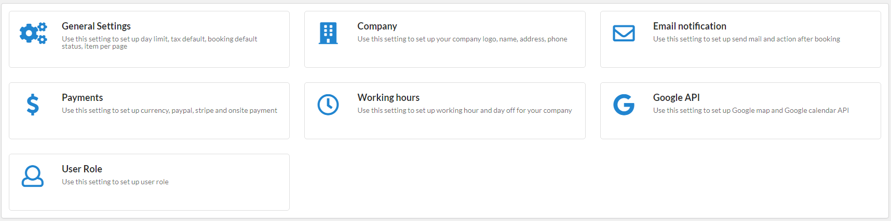

Use this setting to set up working hour and day off for your company. To config, please do follow:

At here you can setting working hour for each day in week (from Monday to Sunday).
You can setting work hour and break time for each day by click 'Add work hour' and 'Add break time'
You can clone work hour to another day via 'Clone' feature. To clone, please hover mouse on 'Clone' text, it will open list day